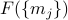
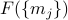

Order Parameter Fields and the Landau-Ginzburg Free Energy
Now that we understand the Landau Free Energy  for the Ising Model, it's time to extend our results to understand broader phenomena. It's quite remarkable how far-reaching and generalizble this sort of phenomenological-free-energy approach can be: we'll see that with just a few assumptions we can make pretty powerful claims about how phase transitions occur.
for the Ising Model, it's time to extend our results to understand broader phenomena. It's quite remarkable how far-reaching and generalizble this sort of phenomenological-free-energy approach can be: we'll see that with just a few assumptions we can make pretty powerful claims about how phase transitions occur.
To be specific, we're going to generalize our results in two different ways:
We'll talk about all sorts of new physical systems beyond the Ising Model. There's an incredible variety of phase transitions out there in nature, and amazingly, a lot of them can be captured by a phenomenological free energy like
, like what we did for the Ising model. Just to give a taste of what's coming:liquid-gas phase transitions, order-disorder transitions in beta-brass, liquid crystals (oooh!), shape-shifting crystals, bacterial vortices (??), superconductors, superfluids, and more…
We'll see that the magnetization in the Ising Model is an example of an order parameter which in general distinguishes the ordered phase from the disordered phase in such materials.
It turns out that phase transitions in these different systems often involve broken symmetry as well. We'll discuss these arguments more in detail on the next page
We'll also discuss the various spatial textures that emerge when we allow the magnetization
 to vary throughout space. For instance, there could be local pockets where all the spins pointed a different way than in other local areas.
to vary throughout space. For instance, there could be local pockets where all the spins pointed a different way than in other local areas.Earlier, when we constructed the Landau Free Energy, we assumed that the magnetization was uniform throughout space; i.e., that every site on the lattice had the exact same value. So it seems pretty natural to losen this requirement to explore some more complicated physics.
Mathematically, we will implement this change by assigning a magnetization
 to each site
to each site  . The free energy now depends on the magnetization at every site on the lattice, , so it becomes a slightly more complicated function.
. The free energy now depends on the magnetization at every site on the lattice, , so it becomes a slightly more complicated function.Finally, we'll take the continuum limit so that the magnetization takes on a value everywhere in space, rather than just at discrete lattice points.
In a later section, we'll discuss some of the implications of the spatial variations in the order parameter.